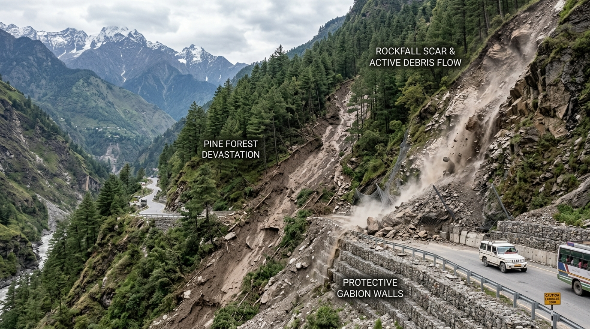

Visual Landslide Field Guide for Citizens & Volunteers
Learn how to identify physical signs of impending slope movement before catastrophic failure occurs. Photographic indicators, geological failure types, and official NDMA life-safety protocols.
1. Observable Physical Warning Signs on Hillsides
Hillsides rarely collapse without warning. Continuous rainfall leads to pore-water pressure buildup that reveals itself through these clear physical indicators:

Tension Cracks, Muddy Springs & Leaning Trees
As soil absorbs excessive monsoon water and loses shear strength, tension cracks open parallel to the road cut. Springs that were previously crystalline turn chocolate-brown with sand, indicating internal soil piping.
-
Road & Path Fissures: New cracks spreading across tarmac, village footpaths, or house verandahs.
-
Sudden Muddy Seepage: Clear mountain springs abruptly running brown or murky after rain.
-
"Pistol-Butt" Leaning Trees: Pine or cedar trees bowing downhill along with tilted electric poles.

Major Types of Himalayan Slope Movements
Northern Indian Himalayan terrain experiences distinct mass movement mechanisms depending on rock structure, slope angle, and rainfall intensity.
-
Debris Flows & Avalanches: High-velocity torrents of mud, boulders, and trees surging down natural ravines (such as Kedarnath 2013 or Chooralmala 2024).
-
Retaining Wall Bulging: Stone gabions or concrete breast walls bowing outward under saturated slope pressure.
-
Rotational Slope Slumping: Slow, progressive sinking of terraces and roads over weeks (such as Joshimath 2023).
2. What to Do: Citizen Safety Protocols (NDMA Guidelines)
Follow these time-tested safety practices issued by the National Disaster Management Authority (NDMA) during monsoonal cloudbursts and landslide threats:
Before (Monsoon Preparation)
- Keep an Emergency Grab-Bag: Flashlight, portable radio, mobile power bank, water, dry food, first aid, and Aadhaar/documents in waterproof plastic.
- Inspect and clear drains, gutters, and culverts around your house so water flows away from slope cuts.
- Identify the nearest designated community shelter or safe elevated terrace away from natural river gullies.
During (Active Movement & Rain)
- If you hear a rumbling sound, cracking trees, or notice sudden water flow changes, evacuate immediately.
- Move lateral (perpendicular) to the path of the flow, not downstream. Get to high ground.
- Never cross flooded mountain bridges, causeways, or active mudflow streams on foot or in vehicles.
- If trapped indoors, take cover under strong furniture away from exterior downslope walls.
After (Post-Incident Safety)
- Stay away from the slide area. Secondary and tertiary collapses often follow initial slope detachment.
- Check for injured or trapped neighbors without directly entering the hazard zone. Alert NDRF / SDRF teams via 112.
- Report damaged power lines, severed water supply, or cracked roads to village panchayats immediately.